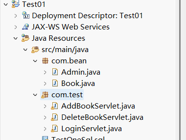
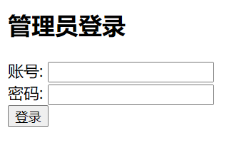
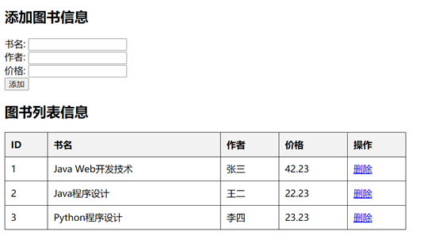

PS>
mysqld --install
net stop mysql
net start mysql
mysql -u root -p
ALTER USER 'root'@'localhost' IDENTIFIED BY '123456';
exit;
net stop mysql
net start mysql
mysql -u root -p
注意预先设置好一个登录账号与密码
mysql>
CREATE DATABASE bookdb;
USE bookdb;
CREATE TABLE admin (
id INT AUTO_INCREMENT PRIMARY KEY,
username VARCHAR(50) NOT NULL,
password VARCHAR(50) NOT NULL
);
INSERT INTO admin (username, password) VALUES ('admin', '123456');
CREATE TABLE books (
id INT AUTO_INCREMENT PRIMARY KEY,
title VARCHAR(100) NOT NULL,
author VARCHAR(100) NOT NULL,
price DECIMAL(10,2) NOT NULL
);
在项目中创建一个 com.test 的包，包下创建 LoginServlet 、 AddBookServlet 、 DeleteBookServlet 三个类

package com.bean;
public class Admin {
private int id;
private String username;
private String password;
public Admin() {}
public Admin(int id, String username, String password) {
this.id = id;
this.username = username;
this.password = password;
}
public int getId() {
return id;
}
public void setId(int id) {
this.id = id;
}
public String getUsername() {
return username;
}
public void setUsername(String username) {
this.username = username;
}
public String getPassword() {
return password;
}
public void setPassword(String password) {
this.password = password;
}
}
package com.bean;
public class Book {
private int id;
private String title;
private String author;
private double price;
public Book() {}
public Book(int id, String title, String author, double price) {
this.id = id;
this.title = title;
this.author = author;
this.price = price;
}
public int getId() {
return id;
}
public void setId(int id) {
this.id = id;
}
public String getTitle() {
return title;
}
public void setTitle(String title) {
this.title = title;
}
public String getAuthor() {
return author;
}
public void setAuthor(String author) {
this.author = author;
}
public double getPrice() {
return price;
}
public void setPrice(double price) {
this.price = price;
}
}
package com.test;
import java.io.IOException;
import java.sql.Connection;
import java.sql.DriverManager;
import java.sql.PreparedStatement;
import java.sql.ResultSet;
import javax.servlet.ServletException;
import javax.servlet.annotation.WebServlet;
import javax.servlet.http.HttpServlet;
import javax.servlet.http.HttpServletRequest;
import javax.servlet.http.HttpServletResponse;
import javax.servlet.http.HttpSession;
import com.bean.Admin;
@WebServlet("/LoginServlet")
public class LoginServlet extends HttpServlet {
protected void doPost(HttpServletRequest request, HttpServletResponse response) throws ServletException, IOException {
String username = request.getParameter("username");
String password = request.getParameter("password");
try {
Class.forName("com.mysql.cj.jdbc.Driver");
Connection conn = DriverManager.getConnection("jdbc:mysql://localhost:3306/bookdb", "root", "123456");
PreparedStatement ps = conn.prepareStatement("SELECT * FROM admin WHERE username=? AND password=?");
ps.setString(1, username);
ps.setString(2, password);
ResultSet rs = ps.executeQuery();
if (rs.next()) {
Admin admin = new Admin(rs.getInt("id"), rs.getString("username"), rs.getString("password"));
HttpSession session = request.getSession();
session.setAttribute("admin", admin);
response.sendRedirect("bookList.jsp");
} else {
response.getWriter().println("<script>alert('Invalid username or password'); window.location='index.jsp';</script>");
}
} catch (Exception e) {
e.printStackTrace();
}
}
}
图书添加的业务处理
package com.test;
import java.io.IOException;
import java.sql.Connection;
import java.sql.DriverManager;
import java.sql.PreparedStatement;
import javax.servlet.ServletException;
import javax.servlet.annotation.WebServlet;
import javax.servlet.http.HttpServlet;
import javax.servlet.http.HttpServletRequest;
import javax.servlet.http.HttpServletResponse;
import com.bean.Book;
@WebServlet("/AddBookServlet")
public class AddBookServlet extends HttpServlet {
protected void doPost(HttpServletRequest request, HttpServletResponse response) throws ServletException, IOException {
request.setCharacterEncoding("UTF-8");
response.setCharacterEncoding("UTF-8");
String title = request.getParameter("title");
String author = request.getParameter("author");
double price = Double.parseDouble(request.getParameter("price"));
Book book = new Book(0, title, author, price);
try {
Class.forName("com.mysql.cj.jdbc.Driver");
Connection conn = DriverManager.getConnection("jdbc:mysql://localhost:3306/bookdb?useUnicode=true&characterEncoding=UTF-8", "root", "123456");
PreparedStatement ps = conn.prepareStatement("INSERT INTO books (title, author, price) VALUES (?, ?, ?)");
ps.setString(1, book.getTitle());
ps.setString(2, book.getAuthor());
ps.setDouble(3, book.getPrice());
ps.executeUpdate();
response.sendRedirect("bookList.jsp");
} catch (Exception e) {
e.printStackTrace();
}
}
}
package com.test;
import java.io.IOException;
import java.sql.Connection;
import java.sql.DriverManager;
import java.sql.PreparedStatement;
import java.sql.SQLException;
import javax.servlet.ServletException;
import javax.servlet.annotation.WebServlet;
import javax.servlet.http.HttpServlet;
import javax.servlet.http.HttpServletRequest;
import javax.servlet.http.HttpServletResponse;
@WebServlet("/DeleteBookServlet")
public class DeleteBookServlet extends HttpServlet {
protected void doGet(HttpServletRequest request, HttpServletResponse response) throws ServletException, IOException {
int id = Integer.parseInt(request.getParameter("id"));
try {
Class.forName("com.mysql.cj.jdbc.Driver");
Connection conn = DriverManager.getConnection("jdbc:mysql://localhost:3306/bookdb?useUnicode=true&characterEncoding=UTF-8", "root", "123456");
PreparedStatement ps = conn.prepareStatement("DELETE FROM books WHERE id=?");
ps.setInt(1, id);
ps.executeUpdate();
response.sendRedirect("bookList.jsp");
} catch (SQLException | ClassNotFoundException e) {
e.printStackTrace();
}
}
}

将 mysql-connector-j.jar 加入 WEB-INF/lib ，然后右击 Build Path ，选择 Add to Build Path 即可

登录页面代码
<%@ page contentType="text/html;charset=UTF-8" language="java" %>
<!DOCTYPE html>
<html>
<head>
<title>Admin Login</title>
</head>
<body>
<h2>管理员登录</h2>
<form action="LoginServlet" method="post">
<label>账号:</label>
<input type="text" name="username" required><br>
<label>密码:</label>
<input type="password" name="password" required><br>
<input type="submit" value="登录">
</form>
</body>
</html>
<%@ page import="java.sql.*" %>
<%@ page import="java.io.*" %>
<%@ page contentType="text/html;charset=UTF-8" language="java" %>
<!DOCTYPE html>
<html>
<head>
<title>图书界面</title>
</head>
<style>
form { margin-bottom: 20px; }
table { width: 50%; border-collapse: collapse; }
th, td { border: 1px solid black; padding: 10px; text-align: left; }
th { background-color: #f2f2f2; }
</style>
<body>
<h2>添加图书信息</h2>
<form action="AddBookServlet" method="post">
<label>书名:</label>
<input type="text" name="title" required><br>
<label>作者:</label>
<input type="text" name="author" required><br>
<label>价格:</label>
<input type="text" name="price" required><br>
<input type="submit" value="添加">
</form>
<h2>图书列表信息</h2>
<table border="1">
<tr>
<th>ID</th>
<th>书名</th>
<th>作者</th>
<th>价格</th>
<th>操作</th>
</tr>
<%
Class.forName("com.mysql.cj.jdbc.Driver");
Connection conn = DriverManager.getConnection("jdbc:mysql://localhost:3306/bookdb", "root", "123456");
PreparedStatement ps = conn.prepareStatement("SELECT * FROM books");
ResultSet rs = ps.executeQuery();
while (rs.next()) {
%>
<tr>
<td><%= rs.getInt("id") %></td>
<td><%= rs.getString("title") %></td>
<td><%= rs.getString("author") %></td>
<td><%= rs.getBigDecimal("price") %></td>
<td>
<a href="editBook.jsp?id=<%= rs.getInt("id") %>">编辑</a>
<a href="DeleteBookServlet?id=<%= rs.getInt("id") %>" onclick="return confirm('确定要删除么?');">删除</a>
</td>
</tr>
<%
}
rs.close();
ps.close();
conn.close();
%>
</table>
</body>
</html>


删除成功后的界面

- 在 MySQL 中执行 SQL 语句，创建数据库和表
- 在 Eclipse 中导入项目，确保 Tomcat 服务器已添加
- 将 mysql-connector-j.jar 添加到 lib 目录
- 启动 Tomcat 服务器，访问 http://localhost:8080/Test01/login.jsp 进行登录
- 登录后可进行书籍的添加、修改和删除。注意 Tomcat 的端口号是否是 8080 ，根据环境自行修改